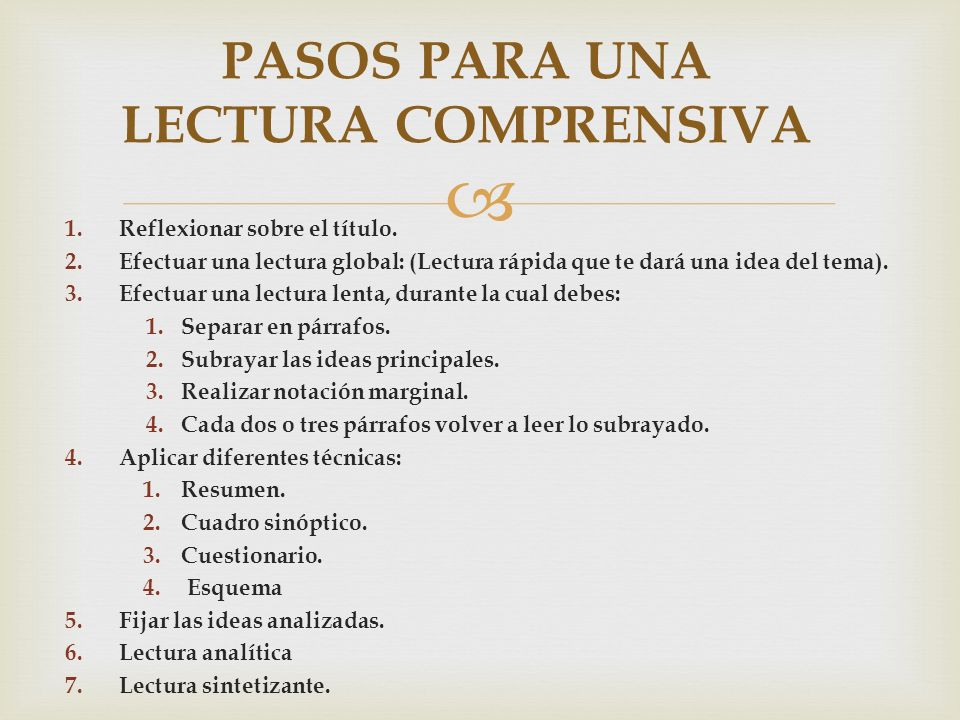

¿En qué consiste?
La Lectura Activa es una técnica de estudio que busca involucrar al
lector con el texto para mejorar la comprensión, memorización y
análisis crítico. SQ3R (Survey, Question, Read, Recite, Review) y
PQRST (Preview, Question, Read, Summary, Test) son dos de sus
métodos más conocidos, y ambos promueven un enfoque metódico para
procesar información de forma profunda.
¿Cómo aplicarlo?
-
Explorar (Survey / Preview): Revisa títulos,
subtítulos, imágenes y resúmenes.
-
Cuestionar (Question): Formula preguntas antes de
leer, como ¿qué quiero aprender?
-
Leer (Read): Lee activamente buscando responder
tus preguntas.
-
Resumir o Recitar (Recite / Summary): Expón con
tus palabras lo aprendido.
-
Revisar o Evaluar (Review / Test): Repasa y
verifica la comprensión del contenido.
✔️ Ventajas:
- Fomenta una comprensión profunda del texto.
- Reduce el estudio pasivo o superficial.
- Mejora la capacidad de análisis y reflexión.
❌ Desventajas:
- Requiere más tiempo y concentración que la lectura común.
-
Puede ser difícil de aplicar en textos muy técnicos o con poco
contexto visual.
¿En qué carreras se recomienda?
Es útil en muchas áreas, especialmente en:
- Derecho
- Psicología
- Ciencias Sociales
- Historia
- Filosofía
- Literatura

Ejemplo visual de cómo organizar la técnica de Lectura Activa paso a
paso.